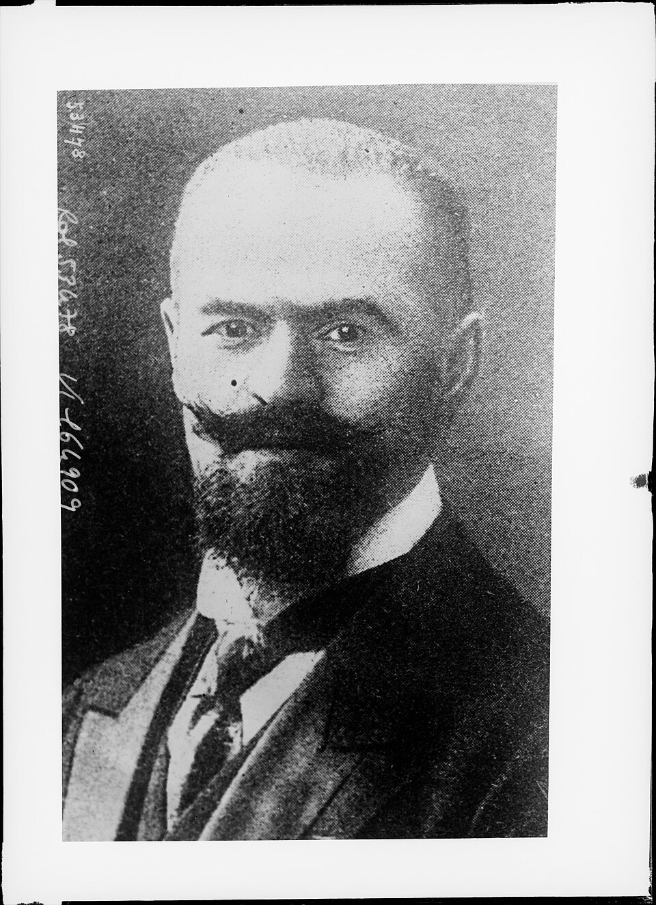
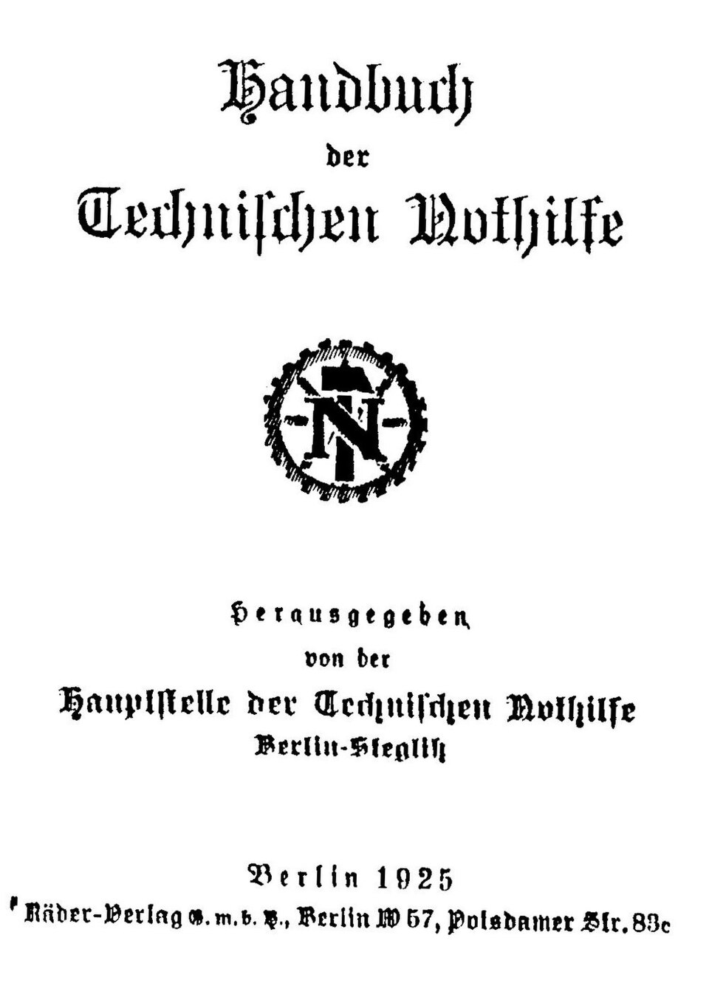
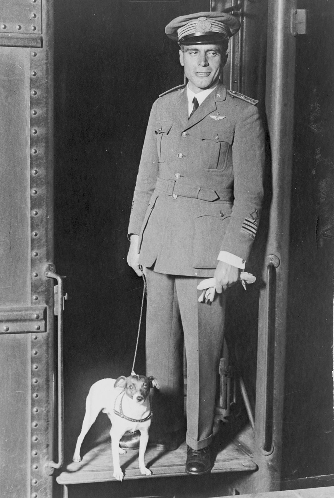

Geschichte im Spiegel der zeitgenössischen Berichterstattung — Täglich neu erzählt
Die historische Presseschau
Freitag, 30. April 1926
7 Artikel aus 16 Originalquellen · 9 Länder · 6 Sprachen
Bérenger und Mellon einigen sich auf 6,8 Milliarden Dollar — Zahlungen über 62 Jahre gestreckt — Pariser Verzicht auf eine Sicherungsklausel
Diplomatische Beratungen in London und Paris — Ruhigere Beurteilung in Genfer Kreisen — Das Echo der ausländischen Presse

Kompromissvorlage nach Veto des Reichspräsidenten verabschiedet — Dienstentlassung künftig nur noch in schweren Fällen — Scharfe Kritik der Sozialdemokratie

Ruhiger Verlauf in Frankreich erwartet — Verbote in China — Vorwürfe gegen die Technische Nothilfe

Schneestürme verzögern die „Norge“ auf Spitzbergen — Byrd mit dem Dampfer eingetroffen — Nobile befürchtet Scheitern der Expedition
Ein Leben für die Erforschung des Unbewussten — Internationale Ehrungen für den umstrittenen Gelehrten
Scharfe Abrechnung mit sowjetischer Bürokratie — Forderung nach strengster Arbeitsdisziplin — Ein historischer Wendepunkt der Staatsstruktur